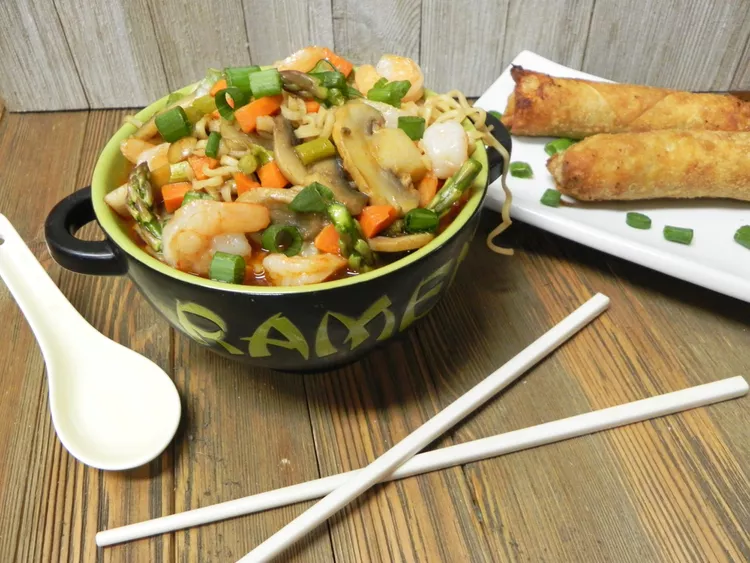

Spicy Shrimp Ramen

Description
Spice up those plain instant ramen noodles with shrimp and your favorite veggies. Pack in tons of flavor into your next meal with this quick and easy spin on instant noodles.
Ingredients
- 2 tsp sesame oil
- 8 oz medium shrimp (peel & devein)
- ¼ cup chopped carrot
- 4 oz button mushrooms, sliced
- 4 cups vegetable broth
- 1 tbsp hoisin sauce
- 1 tbsp soy sauce
- 2 tsp chile-garlic sauce
- 5 fresh asparagus, trimmed and chopped
- 2 (3 oz) packages of instant ramen noodles, flavor packet discarded
- 2 green onions,chopped
Steps
- Heat 1 teaspoon sesame oil in a large soup pot over medium heat; cook and stir shrimp until bright pink, about 5 minutes. Transfer shrimp to a plate.
- Heat remaining 1 teaspoon sesame oil; cook and stir carrots and sliced mushrooms until they begin to soften, about 5 minutes. Pour in broth, hoisin, soy sauce, and chile-garlic sauce. Bring to a boil; boil 3 minutes.
- Add asparagus and ramen noodles; boil 3 minutes. Turn off heat. Stir shrimp back into the pot; let stand 4 minutes.
- Divide mixture between two bowls. Garnish with chopped green onions.